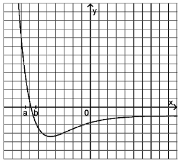

Bayerisches Abitur in Mathematik 2014¶
Aufgabe
Die Abbildung zeigt den Graphen einer Funktion \(f\).
Beschreiben Sie für \(a\leq x\leq b\) den Verlauf des Graphen einer Stammfunktion von \(f\).
Skizzieren Sie in der Abbildung den Graphen einer Stammfunktion von \(f\) im gesamten dargestellten Bereich.
Lösung zu Teil a
In dieser Aufgabe wollen wir zunächst die Stammfunktion skizzieren, die von der Form
ist. Für \(x=a\) ist die Stammfunktion also gleich Null. Für \(x>a\) beginnt die Stammfunktion zunächst erst stärker, dann immer schwächer zu steigen, bis die Nullstelle \(x=x_0\) von \(f\) erreicht wird. Anschließend fällt die Stammfunktion erst schwächer und dann immer stärker bis \(x=b\) erreicht wird.
Um diese Aufgabe mit Hilfe von Sage zu behandeln, müssen wir zunächst eine Funktion finden, die der abgebildeten Funktion ähnelt. Dies ist im Wesentlichen bei dem so genannten Lennard-Jones-Potential der Fall. Hierbei handelt es sich um eine Funktion, mit der in der Physik die Bindungsenergie zwischen manchen Atomen beschrieben werden kann. Eine mögliche Form der Funktion ist
wobei \(a\) und \(b\) Konstanten sind. Um eine möglichst ähnliche Form zur gestellten Aufgabe zu bekommen, verschieben und stauchen wir die Funktion noch entsprechend. Für die Auswertung mit Sage verwenden wir daher die Funktion
Um den Verlauf der Stammfunktion im Bereich der Nullstelle der Funktion zu ermitteln, ermitteln wir das bestimmte Integral der Funktion von \(a\) bis \(x\), wobei \(x\) die Werte von \(a = -1{,}8\) bis \(b = -1{,}4\) durchläuft.
Lösung zu Teil b
In dieser Teilaufgabe betrachten wir eine Stammfunktion, die an der Stelle, an der die Darstellung der Funktion \(f\) beginnt, verschwindet. Wir betrachten also die Funktion
wobei \(x=c\) die erste Stelle ist, an der \(f\) dargestellt wird. Unsere Stammfunktion beginnt daher ähnlich zur ersten Teilaufgabe zunächst stark zu wachsen. Das Wachstum nimmt dann immer weiter ab, und wechselt nach der Nullstelle von \(f\) zu einem negativen Vorzeichen. Ab hier nimmt die Stammfunktion streng monoton ab und nimmt ab einem bestimmten Zeitpunkt nur noch negative Werte an. Das maximale negative Wachstum der Stammfunktion befindet sich an dem Minimum der Funktion \(f\). Anschließend fällt die Stammfunktion weniger schnell ab und nähert sich am Ende des dargestellten Bereichs einer Gerade mit negativer Steigung.
Mit Sage gehen wir genauso vor, wie in der vorherigen Teilaufgabe. Wir passen lediglich die Stammfunktion und den Darstellungsbereich an.